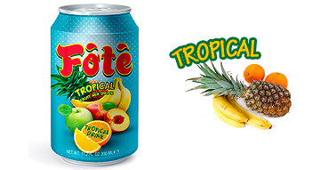
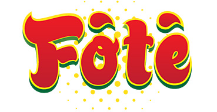

Marque propre
Fote, une saveur unique et savoureuse
Née d'une étude approfondie des tendances de consommation, la marque Fote propose des jus de fruits pensés pour l'Afrique, puis pour l'Europe.
Notre histoire de marque
Après une étude de marché sur les produits les plus populaires, nous avons lancé Fote en 2013 : une marque de jus de fruits différenciée par ses couleurs, son design et sa saveur.
Chaque référence est régulièrement testée dans des usines certifiées, dans le respect des normes de sécurité alimentaire les plus strictes.
Nos jus Fote

Fote Tropical
Un mélange de fruits tropicaux à la saveur vive, pensé pour rafraîchir à tout moment de la journée.

Fote Mango
Le nectar de mangue signature de la marque, gourmand et généreux en fruit.
Pourquoi Fote
Saveur distinctive
Des recettes pensées pour se démarquer, du goût jusqu'au design de la canette.
Qualité contrôlée
Une production en usines certifiées, testée à chaque étape.
Toujours plus de choix
De nouvelles saveurs à venir, pour élargir la gamme Fote.
Notre vision
Conquérir le marché africain avec la marque Fote, avant de partir à la conquête de l'Europe, un marché à la fois.
Voir tous nos produits